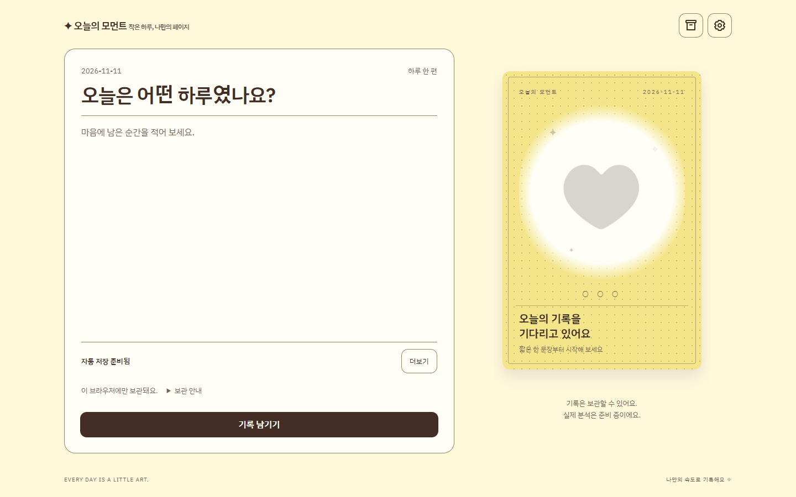
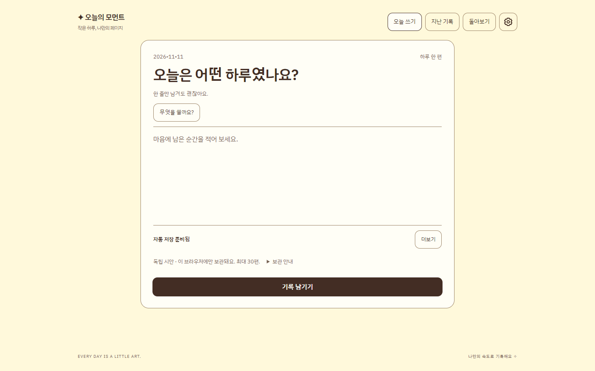
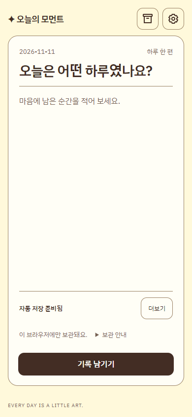
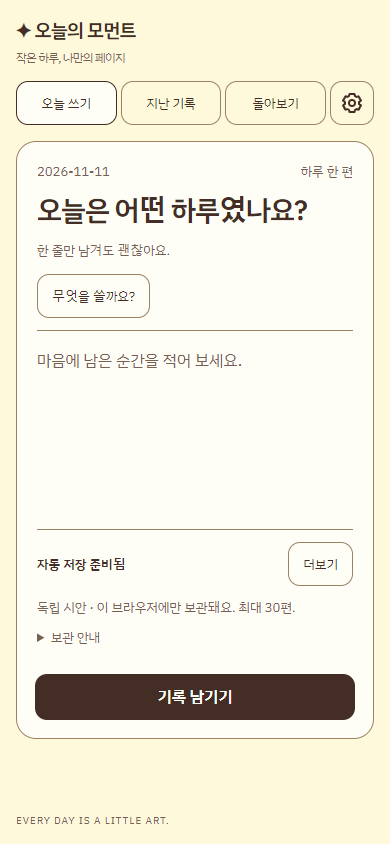
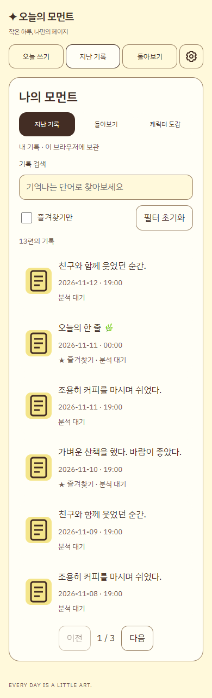
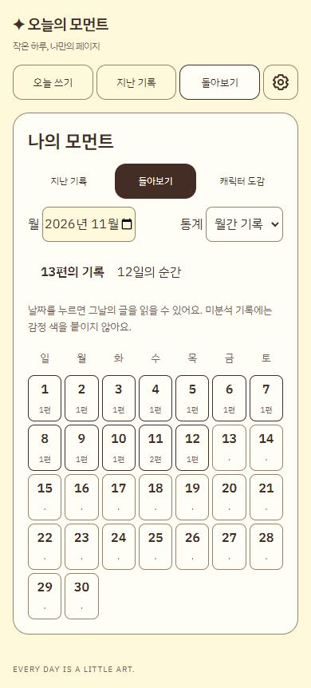
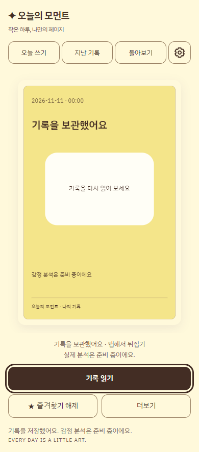
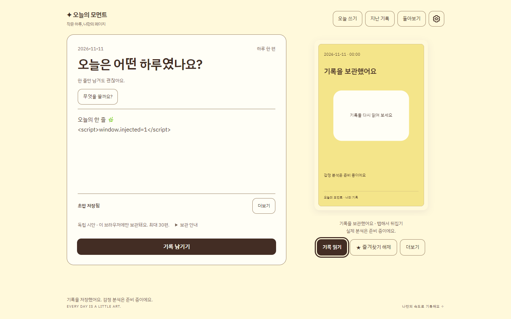
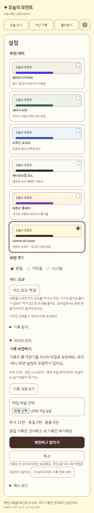
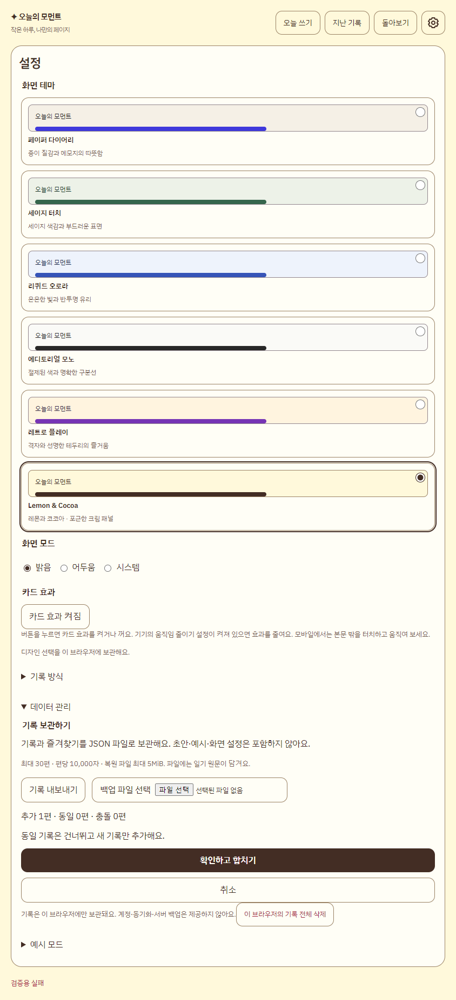

오늘의 모먼트 · 기록이 먼저 보이는 시안
짧게 쓰고, 쉽게 찾고, 한 달의 기록을 돌아봅니다. 기존 테마를 유지하며 화면 구조와 실제 기록 흐름을 개선했습니다.
합성 기록을 사용한 실제 브라우저 캡처입니다. 모바일 이미지는 브라우저 에뮬레이션이며 실제 기기 검증은 별도입니다.
PC · 작성 전후
기존
시안 · 입력에 집중하는 가운데 배치
모바일 · 작성 전후
기존
시안 · 선택형 도움말과 분리된 저장 안내
모바일 · 읽기와 돌아보기
검색·즐겨찾기
월간 기록
저장 후 읽기
PC · 저장 결과
작성창과 기록 결과의 두 열 배치
복원 전 확인과 실패 처리
추가·동일·충돌을 먼저 확인
저장 실패 시 기존 기록 유지